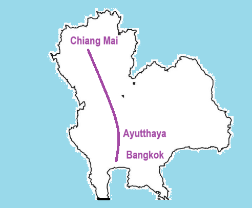

1. Introduction:
Thai Railways, operated by the State Railway of Thailand (SRT), serves as a vital transportation network connecting cities, towns, and rural regions across the country. Established in 1890, it spans over 4,000 kilometers and offers various services, including commuter trains, intercity express routes, and international connections to neighboring countries. Renowned for its scenic journeys, such as the route to Chiang Mai through lush mountains, Thai Railways combines affordability with charm, making it popular among both locals and tourists. Despite ongoing modernization efforts, the railway system remains a cornerstone of Thailand's cultural and economic connectivity.
2. Itineraries
Chiang Mai
$350, 4 Days
3. Useful Information:
| State Railway of Thailand : http://www.railway.co.th |
| Telephone Code : +66 , Currency THB USD=33 THB |
| Travel SIM for tourists : Several available at airport and easy to get |